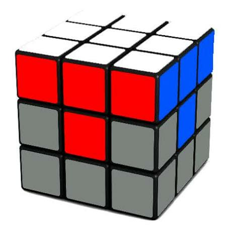

Completing the White Face
Place the white corner pieces into their correct positions to complete the first layer. Each corner should have white and two other colors that match the adjacent center pieces, finishing the white face entirely.
